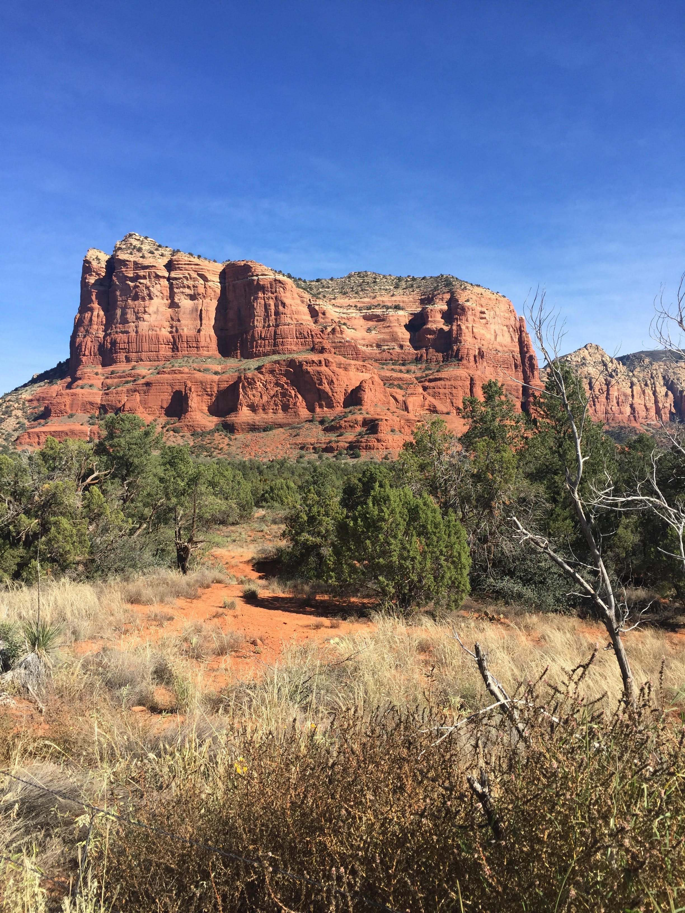

Mini Project 2: Digital & Text Image
The first image is from Sedona, Arizona from a trip I took there in November, 2018. To change the image, I used the warming filter and changed the vibrance.
| Before | After |
|---|---|
|  | |
The next image is from Myrtle Beach which my family goes to every summer. To change the image, I used cropping.
| Before | After |
|---|---|
 |
 |